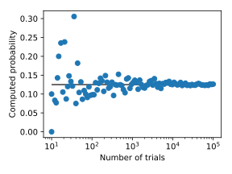

Probabilidad de que un tetraedro en una esfera contenga su centro
Me interesé en este problema viendo el canal de YouTube 3Blue1Brown, de Grant Sanderson, donde explica una forma de abordar el problema que es simplemente ... elegante.
Este canal me gusta mucho. Por ejemplo, su acercamiento al álgebra lineal en La esencia del álgebra lineal es realmente bueno.
El problema
Entremeos en materia. El problema fue originalmente parte de la 53 Competencia de Putnam en 1992. El problema está planteado de la siguiente manera.
Se eligen cuatro puntos al azar en la superficie de un esfera. ¿Cuál es la probabilidad de que el centro de la la esfera se encuentra dentro del tetraedro cuyos vértices están en los cuatro puntos? (Se entiende que cada punto es elegido de forma dependiente en relación con una distribución uniforme en la esfera.)
Como se muestra en el video mencionado, la probabilidad es \(1/8\). Vamos a escribir un algoritmo para obtener este resultado, aproximadamente, al menos.
El enfoque propuesto.
El enfoque que vamos a utilizar es bastante sencillo. Vamps a obtener una muestra de conjuntos aleatorios (independientes), con cuatro puntos cada uno, y vamos a verificar cuántos satisfacen la condición de estar adentro del tetraedro con los puntos como vértices.
Para que este enfoque funcione, necesitamos dos cosas:
Una forma de generar números aleatorios distribuidos uniformemente. Esto ya lo tenemos en
numpy.random.uniform, por lo que no necesitamos hacer mucho al respecto.Una forma de verificar si un punto está dentro de un tetraedro.
Verificar que un punto está dentro de un tetraedro
Para encontrar si un punto está dentro de un tetraedro, podríamos calcular sus coordenadas barcéntricas y verificar que todas tienen el mismo signo. Equivalentemente, como se propone aquí, podemos comprobar que los determinantes de las matrices
tienen el mismo signo. En este caso, \((x, y, z)\) es el punto de interés y \((x_i, y_i, z_i)\) son las coordenadas de cada vértice.
El algoritmo
A continuación se muestra una implementación de Python del enfoque discutido anteriormente
from __future__ import division, print_function from numpy import (random, pi, cos, sin, sign, hstack, column_stack, logspace) from numpy.linalg import det import matplotlib.pyplot as plt def in_tet(x, y, z, pt): """ Determina si un punto pt está al interior de un tetraedro con vértices x, y, z """ mat0 = column_stack((x, y, z, [1, 1, 1, 1])) det0 = det(mat0) for cont in range(4): mat = mat0.copy() mat[cont] = hstack((pt, 1)) if sign(det(mat)*det0) < 0: inside = False break else: inside = True return inside #%% Cálculo prob = [] random.seed(seed=2) N_min = 1 N_max = 5 N_vals = logspace(N_min, N_max, 100, dtype=int) for N in N_vals: inside_cont = 0 for cont_pts in range(N): phi = random.uniform(low=0.0, high=2*pi, size=4) theta = random.uniform(low=0.0, high=pi, size=4) x = sin(theta)*cos(phi) y = sin(theta)*sin(phi) z = cos(theta) if in_tet(x, y, z, [0, 0, 0]): inside_cont += 1 prob.append(inside_cont/N) #%% Graficación plt.figure(figsize=(4, 3)) plt.hlines(0.125, 10**N_min, 10**N_max, color="#3f3f3f") plt.semilogx(N_vals, prob, "o", alpha=0.5) plt.xlabel("Number of trials") plt.ylabel("Computed probability") plt.tight_layout() plt.show()
Como se esperaba, cuando el número de muestras es suficientemente grande, la probabilidad estimada es cercana al valor teórico: 0,125. Esto se puede ver en la siguiente figura.
